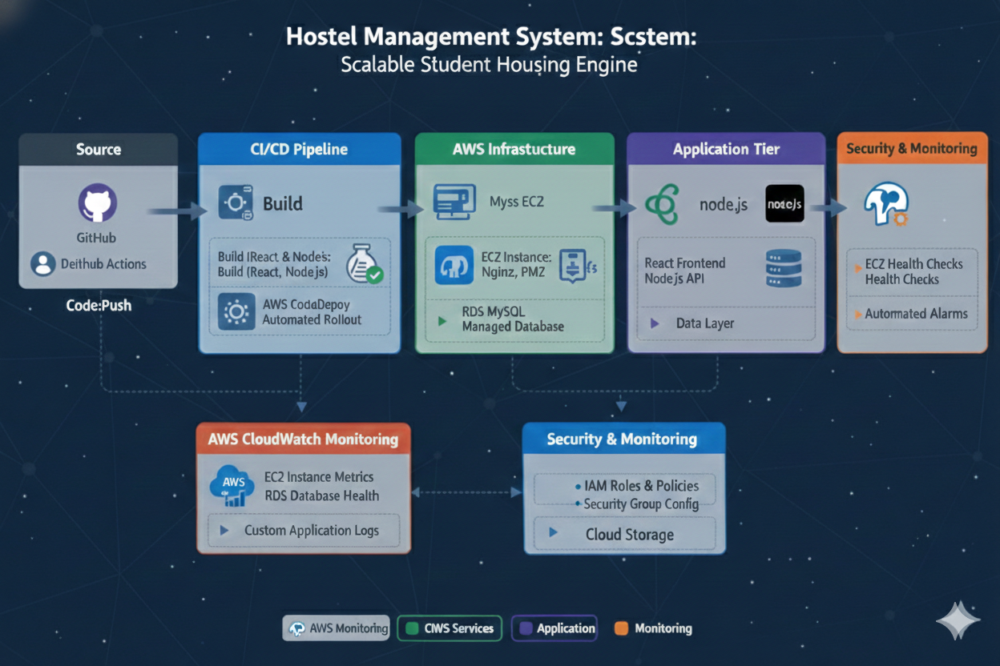

A full-stack solution connecting students with local housing through automated CI/CD pipelines.
The Hostel Management System was developed to solve a critical pain point for college students: the stressful and inefficient process of finding reliable off-campus housing and PGs. This platform provides a centralized digital marketplace where students can browse, filter, and secure accommodations with verified data.
Technically, the project demonstrates a robust Three-Tier Architecture. It utilizes a React frontend for a seamless user experience, a Node.js/Express backend for business logic, and an AWS RDS MySQL instance for secure data persistence. To ensure professional-grade delivery, I implemented an automated pipeline using GitHub Actions and AWS CodeDeploy, enabling "Push-to-Deploy" functionality that updates the live EC2 environment instantly upon code commits.
The infrastructure is designed for reliability and ease of maintenance. By leveraging Nginx as a reverse proxy on AWS EC2, the application handles incoming traffic efficiently, routing requests to the Node.js backend while serving the React static files.

Automated Deployment Workflow to AWS EC2
Basic but essential security measures were integrated to protect student data and infrastructure integrity.
Ensuring the system remains available for students through proactive tracking.
Monitoring EC2 CPU utilization and status checks to alert on potential hardware failures.
Ready to automate and scale? Reach out!